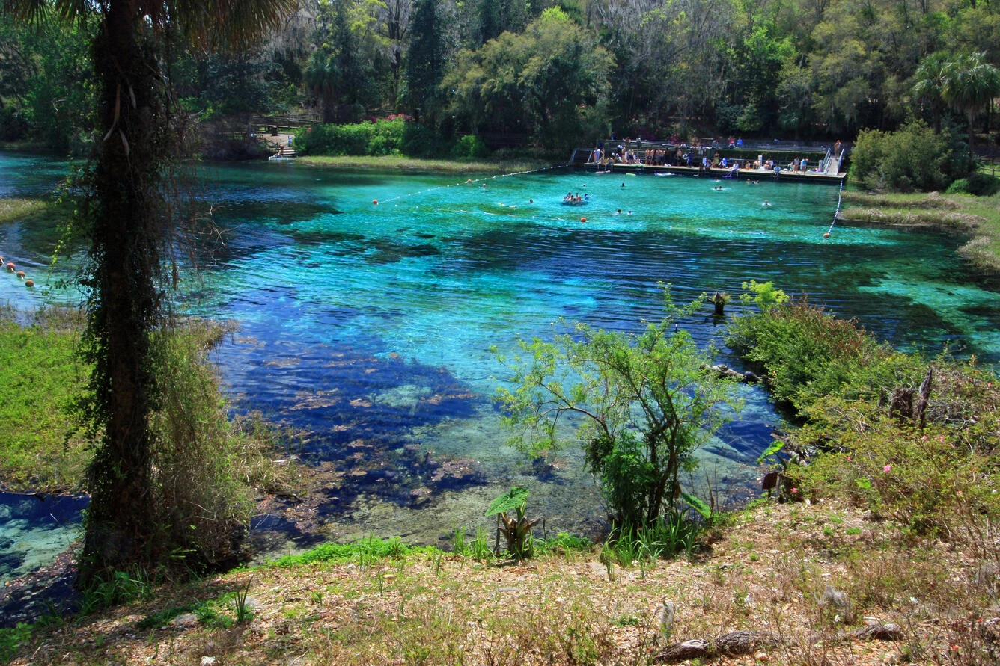
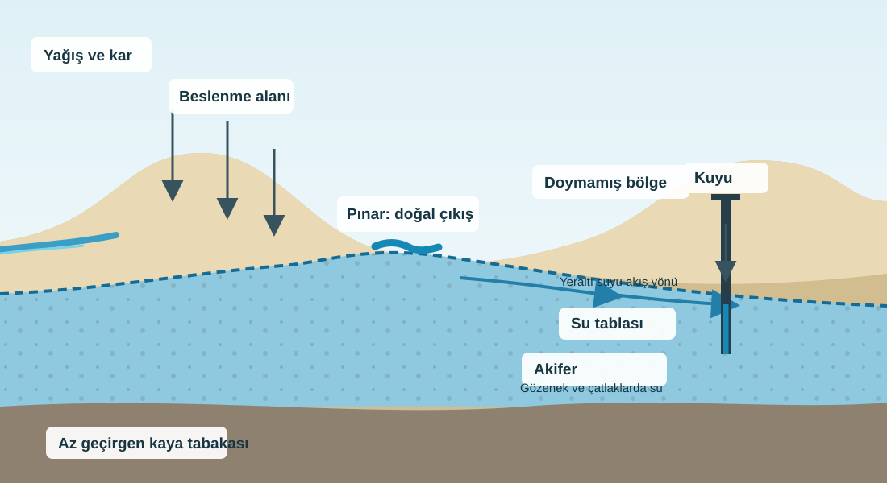

Yeraltı suyu çoğunlukla yağmurun ve eriyen karın toprağa sızmasıyla beslenir. Suyun bir bölümü bitkiler tarafından kullanılır, buharlaşır ya da yüzeyden akıp gider; geri kalanı toprak ve kayaçlardaki boşluklardan aşağı süzülür. Doygun bölgeye ulaştığında, geçirgen kaya ve tortullarda depolanıp hareket eden suya dönüşür. Bu akiferlerden bazıları bir yamaçta veya vadide yüzeye açılır: pınarlar böyle doğar.[1][2]
Yeraltı suyu yerin neresinde durur?
Yeraltı suyu çoğu zaman geniş, boş mağaralarda birikmiş bir göl gibi düşünülür; oysa suyun büyük bölümü kum ve çakıl taneleri arasındaki küçük gözeneklerde, kayaçların çatlaklarında ve bazı kireçtaşlarının çözünmesiyle oluşmuş kanallarda bulunur. Zemin katı görünür ama yeterince gözenekli ve geçirgense suyu depolayabilir; bu boşluklar birbirine bağlıysa su içlerinden ilerleyebilir.[1]
Yerin üst katmanlarında bu boşlukların bir bölümü su, bir bölümü hava taşır. Daha derinde boşluklar tamamen suyla dolmaya başlar; bu doygun bölgenin üst sınırına su tablası denir. Su tablası her yerde aynı derinlikte değildir; yağışlı ve kurak dönemlerle yükselebilir ya da alçalabilir. Bitki köklerinin aldığı nem ise yeraltı suyuyla ilişkili olsa da, henüz doygun bölgeye ulaşmamış toprak suyu ile aynı şey değildir.[2]
Akifer nedir; suyu nasıl taşır?
Akifer, suyu depolayabilen ve kuyulara ya da pınarlara aktarabilecek kadar iletebilen jeolojik oluşumdur. Kum-çakıl tabakaları, kumtaşı ve çatlaklı kayaçlar akifer olabilir; ancak her su tutan kaya iyi bir akifer değildir. Gözeneklilik suyun depolanabileceği boşlukları, geçirgenlik ise bu boşlukların birbirine bağlanıp suyun akmasına izin vermesini anlatır. Kil, su içerebilir ama suyu çok yavaş ilettiğinden çoğu yerde geçirimsiz ya da az geçirgen bir tabaka gibi davranır.[2]
Üstü yüzeye açık akiferlerde su tablası doğrudan yağış ve yüzey koşullarından etkilenir. İki az geçirgen katman arasında kalan akiferlerdeyse su basınç altında olabilir; böyle bir akifere açılan kuyuda suyun yükselmesi artezyen koşulu olarak bilinir. Bu, suyun kendi kendine sonsuzca aktığı anlamına gelmez: akiferin basıncı ve beslenmesi sınırlıdır.
Yağmurun hepsi akifere ulaşmaz
Yağış yere düştüğünde birkaç farklı yola ayrılır. Bir bölümü bitkiler tarafından tutulup atmosfere geri döner; bir bölümü yüzey akışına katılır. Toprağa sızan suyun da hepsi derine inmez: kökler onu alabilir veya yüzeye yakın tabakadan yeniden buharlaşabilir. Kök bölgesinin altına doğru ilerleyip doygun bölgeye ulaşan su, akiferin doğal beslenmesine katkı verir.[3]
Beslenme hızı; yağışın miktarı ve şiddeti, zeminin yapısı, eğim, bitki örtüsü ve akiferin derinliği gibi etkenlere bağlıdır. Dere ve göl yataklarından sızan su da bazı akiferleri besleyebilir. Bu yüzden kısa süreli yoğun yağış, her yerde aynı miktarda yeraltı suyu oluşturmaz. Derin akiferlerde yenilenme çok yavaş olabilir; bazı yerlerde suyun yeraltında kalma süresi onlarca, yüzlerce, hatta binlerce yıla uzayabilir. “Yeraltında su var” demek, o suyun hızla yenilendiği anlamına gelmez.[3]

Pınar: yeraltı suyunun yüzeye açıldığı yer
Bir yamaç, vadi tabanı ya da kaya çatlağı su tablasıyla veya akiferden gelen akışla kesiştiğinde su doğal biçimde yüzeye çıkar. Bu çıkışa pınar ya da kaynak denir. Pınarlar yalnızca büyük havuzlar değildir: bazısı kayadan ince bir sızıntı hâlinde görünür, bazısı dereyi besleyecek kadar güçlü ve sürekli akar. Kireçtaşının çatlak ve boşluklarında gelişen karstik sistemlerde su, yeraltındaki kanallardan hızla ilerleyip güçlü kaynaklardan çıkabilir.[4]
Bir pınarın debisi, onu besleyen alanın büyüklüğüne, akiferin yapısına, yeraltı basıncına ve yağışa göre değişir. Yağıştan hemen sonra artan veya yalnızca belirli mevsimlerde akan kaynaklar da vardır. Yeraltı suyu pınarlarla derelere karışabildiği için, bazı akarsular yağmur kesildikten sonra da akmaya devam eder.[4]
Akiferden fazla su çekilirse ne olur?
Kuyulardan uzun süre boyunca çekilen su, akiferin doğal beslenmesini ve diğer çıkışlarını aşarsa yeraltı suyu seviyesi düşebilir. Kuyunun çevresinde su tablası aşağı çekilir; buna bağlı olarak kuyunun debisi azalır, daha derin pompa gerekebilir veya kuyu kuruyabilir. Pınarları ve sulak alanları besleyen akış zayıflayabilir; yeraltı suyunun katkı verdiği derelerin kurak dönem debisi de düşebilir.[5]
Aşırı çekimin etkisi yalnızca kuyuda görülmez. Bazı zeminlerde suyun çekilmesi, taneler arasındaki basıncı azaltarak zeminin sıkışmasına ve yüzeyin çökmesine yol açabilir. Kıyı akiferlerinde tatlı su basıncının azalması deniz suyunun yeraltına ilerlemesini kolaylaştırabilir. Bunların ortaya çıkıp çıkmayacağı ve şiddeti, jeolojiye, çekim miktarına ve akiferin yenilenme hızına bağlıdır; her su seviyesi düşüşü kalıcı tükenme değildir, ama uzun dönemli düşüşler dikkatle izlenmelidir.[5]
Yeraltı suyu her zaman temiz midir?
Toprak ve kayaçlar bazı parçacıkları süzebilir; bu, yeraltı suyunun bütün zararlı maddelerden arındığı anlamına gelmez. Su yeraltında hareket ederken çevresindeki mineralleri çözer. Demir, mangan, tuzluluk ve bazı doğal elementler kayaçlardan suya geçebilir. Tarım gübrelerinden gelen nitratlar ve pestisitler, sızdıran fosseptikler, atıklar veya yakıt sızıntıları da akifere ulaşabilir. Hangi maddelerin bulunacağı, hem yerel kayaçlara hem de yüzeydeki insan faaliyetlerine bağlıdır.[6]
Kayaçlardan çözünen mineraller, demir ve mangan; bazı bölgelerde arsenik, florür ya da tuzluluk.
Gübre ve pestisitler, kanalizasyon sızıntıları, çöplükler ve yakıt ya da kimyasal sızıntıları.
Sığ ve yüzeye açık akiferler, kirleticilerin ulaşmasına karşı çoğu zaman daha savunmasızdır. Yeraltında su yavaş hareket ettiğinden kirlilik uzun süre kalabilir ve temizlenmesi güç olabilir. Pınar suyunun berrak, soğuk veya lezzetli olması mikrop ya da çözünmüş kimyasal içermediğini kanıtlamaz. İçme amacıyla kullanılan kuyu ve kaynak sularının güvenliği, görünüşe bakarak değil, uygun laboratuvar analizleri ve yerel sağlık otoritesinin değerlendirmesiyle belirlenmelidir.[6][4]
Özetle
Yeraltı suyu çoğunlukla yağışın ve kar erimesinin bir kısmının zemine sızıp doygun bölgeye ulaşmasıyla oluşur. Akiferler bu suyu depolayan ve ileten kayaç ya da tortul tabakalardır. Su tablası, pınarların debisi ve kuyuların verimi mevsimlerden ve insan kullanımından etkilenebilir. Suyu yenilenme hızından daha hızlı çekmek kaynakları azaltabilir; doğal mineraller ve yüzeyden taşınan kirleticiler de su kalitesini değiştirebilir. Yeraltı suyu görünmez olabilir ama yüzeydeki dereler, sulak alanlar ve içme suyu için büyük önem taşır.
Kaynaklar ve ileri okuma
- U.S. Geological Survey (USGS), “Groundwater: What is Groundwater?”. Yeraltı suyunun su döngüsündeki yeri, gözenek ve çatlaklarda bulunması ve hareketi.
- USGS, “Aquifers and Groundwater”. Akifer, su tablası, suyun depolanması ve kuyulardan çekilmesi.
- USGS, “Infiltration and the Water Cycle”. Yağışın sızması, beslenme hızını etkileyen koşullar ve akiferlerin yenilenmesi.
- USGS, “Springs and the Water Cycle”. Pınarların oluşumu, debileri ve su kalitesinin değişkenliği.
- USGS, “Groundwater Decline and Depletion”. Uzun süreli aşırı çekimin kuyu, akarsu, zemin ve kıyı akiferleri üzerindeki etkileri.
- USGS, “Groundwater Quality”. Doğal ve insan kaynaklı kirleticiler, akiferlerin hassasiyeti ve su kalitesinin izlenmesi.
- Alan Cressler/USGS, “Rainbow Springs, Florida, USA”. Fotoğraf, USGS tarafından Public Domain olarak yayımlanmıştır.